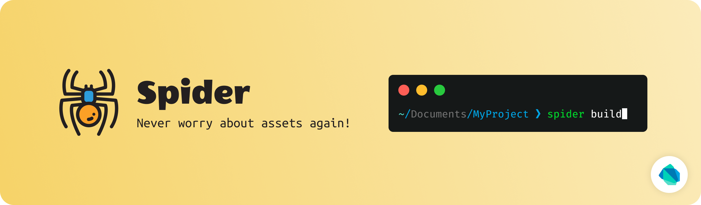

Spider¶
A small dart library to generate Assets dart code from assets folder. It generates dart class with static const variables in it which can be used to reference the assets safely anywhere in the flutter app.


Breaking Changes since v1.0.0:¶
Instead of declaring
packagename separately for each group, spider now takespackagekey-value pair as a global configuration.
Example¶
Before¶
Widget build(BuildContext context) {
return Image(image: AssetImage('assets/background.png'));
}
After¶
Widget build(BuildContext context) {
return Image(image: AssetImage(Assets.background));
}
Generated Assets Class¶
class Assets {
static const String background = 'assets/background.png';
}
This method allows no error scope for string typos. Also, it provides auto-complete in the IDE which comes very handy when you have large amount of assets.
Watch Directory¶
Spider can also watch given directory for changes in files and rebuild dart code automatically. Use following command to watch for changes:
spider build --watch
see help for more information:
spider build --help
Smart Watch (Experimental)¶
The normal --watch option watches for any kind of changes that happens in the directory. However this can be improved my smartly watching the directory. It includes ignoring events that doesn't affect anything like file content changes. Also, it only watches allowed file types and rebuilds upon changes for those files only.
Run following command to watch directories smartly.
spider build --smart-watch
Categorizing by File Extension¶
By default, Spider allows any file to be referenced in the dart code. but you can change that behavior. You can specify which files you want to be referenced.
path: assets
class_name: Assets
package: res
types: [ jpg, png, jpeg, webp, bmp, gif ]
Use Prefix¶
You can use prefixes for names of the generated dart references. Prefixes will be attached to the formatted reference names.
path: assets
class_name: Assets
package: res
prefix: ic
Output¶
class Assets {
static const String icCamera = 'assets/camera.png';
static const String icLocation = 'assets/location.png';
}
Advanced Configuration¶
Spider provides supports for multiple configurations and classifications. If you wanna group your assets by module, type or anything, you can do that using groups in spider.
Example¶
Suppose you have both vector(SVGs) and raster images in your project and you want to me classified separately so that you can use them with separate classes. You can use groups here. Keep your vector and raster images in separate folder and specify them in the config file.
spider.yaml
groups:
- path: assets/images
class_name: Images
package: res
- path: assets/vectors
class_name: Svgs
package: res
Here, first item in the list indicates to group assets of assets/images folder under class named Images and the second one indicates to group assets of assets/vectors directory under class named Svgs.
So when you refer to Images class, auto-complete suggests raster images only and you know that you can use them with AssetImage and other one with vector rendering library.
Multi-path configuration¶
From Spider v0.4.0, multiple paths can be specified for a single group to collect references from multiple directories and generate all the references under single dart class.
Example¶
groups:
- paths:
- assets/images
- assets/more_images/
class_name: Images
package: res
types: [ .png, .jpg, .jpeg, .webp, .webm, .bmp ]
By using paths, multiple source directories can be specified. Above example will generate references from assets/images and assets/more_images/ under a single dart class named Images.
Generating Tests¶
Spider v0.4.0 adds support for generating test cases for generated dart references to make sure that the asset file is present in the project. These tests can also be run on CI servers. To enable tests generation, specify generate_tests flag in spider.yaml or spider.json configuration file as shown below.
generate_tests: true
Enable Verbose Logging¶
Spider prefers not to overwhelm terminal with verbose logs that are redundant for most of the cases. However those verbose logs come quite handy when it comes to debug anything. You can enable verbose logging by using --verbose option on build command.
spider build --verbose
# watching directories with verbose logs
spider build --watch --verbose
Liked spider?¶
Show some love and support by starring the repository.
Or You can

License¶
Copyright © 2020 Birju Vachhani
Licensed under the Apache License, Version 2.0 (the "License");
you may not use this file except in compliance with the License.
You may obtain a copy of the License at
http://www.apache.org/licenses/LICENSE-2.0
Unless required by applicable law or agreed to in writing, software
distributed under the License is distributed on an "AS IS" BASIS,
WITHOUT WARRANTIES OR CONDITIONS OF ANY KIND, either express or implied.
See the License for the specific language governing permissions and
limitations under the License.